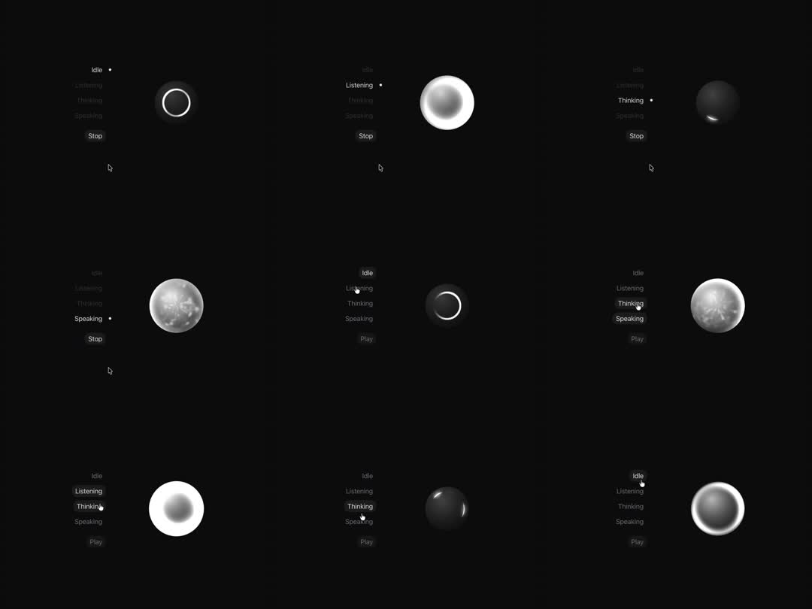

Voice-assistant orb state machine: one central orb morphs between Idle (thin dim ring), Listening (bright white glow orb), Thinking (dark orb with a rotating crescent arc), Speaking (textured moon-surface orb with alive noise); a left rail lists the states.
Media
Frame-by-frame

0-15%
Idle: small dim ring outline, static; state list shows Idle active.
15-30%
Listening: orb blooms into a large soft white glowing sphere (outer glow halo), gently pulsing scale ~4%.
30-50%
Thinking: orb goes dark with a bright crescent arc sweeping around its limb (rotating highlight, ~1 rev/1.2s) - like a loading moon.
50-75%
Speaking: orb fills with a moon-like crater texture that slowly churns (surface noise scrolls); subtle scale breathing tied to 'speech'.
75-100%
Cycles back through Listening -> Idle; transitions between states are smooth 400-600ms morphs (blur/opacity/scale crossfade), never hard cuts.
Build prompt
Rebuild this interaction 1:1: a voice-assistant orb state machine. One central orb morphs between Idle (thin dim ring), Listening (bright glowing white orb), Thinking (dark orb with a rotating crescent highlight), and Speaking (moon-surface texture that churns). A left rail lists the 4 states; selecting one morphs the orb.
## Integration
Integration: stack-agnostic spec - springs given as stiffness/damping, timed motions as duration + curve, canvas/shader notes are perf guidance only; map every value to your framework and animation library of choice.
## Scene
Pure black stage. Center: 200px orb composed of stacked layers (core fill, glow halo, texture layer, arc mask). Left rail: vertical list of the 4 states, mono 11px uppercase, active item white, inactive white/35, 24px row hit area.
## Motion spec
Pattern: state machine with ambient loops per state.
- Transitions between states: 400-600ms morphs - crossfade opacity, blur 8 -> 0, scale 0.96 -> 1, ease-in-out cubic-bezier(0.4, 0, 0.2, 1). Never a hard cut.
- Idle: 1.5px white/40 ring, 20% inner white fill, perfectly still.
- Listening: core blooms to a soft white orb (radial white core fading by 70%), outer halo white/35 with blur(40px); scale breathes 1 -> 1.04 on a 1.6s sine loop.
- Thinking: orb dims to 15% grey; a crescent highlight (conic-gradient masked to a 20-30% arc, edges feathered) rotates around the limb, 1 rev per 1.2s, linear.
- Speaking: surface becomes moon texture - fractal noise (fbm) scrolled slowly, contrast pushed into craters; the texture churns continuously; subtle scale breathing (~2%) tied to "speech" amplitude.
- Rail: active state crossfades 200ms; a 2px indicator tick slides between rows with spring stiffness 300 damping 30.
## Calibration
- State morphs 400-600ms; faster reads as a glitch, slower reads as loading.
- Listening pulse amplitude is 4% scale - restrained. More than 6% looks like a heartbeat.
- Thinking arc speed 1.2s/rev: slow enough to feel "deep in thought".
## Reduced motion
State morphs become 150ms opacity crossfades. Crescent arc, breathing, and texture churn all freeze on a representative frame.
## Don't miss
- The orb is one element that morphs; do not render 4 separate orbs and swap them.
- The Thinking crescent is a masked conic gradient rotating around the edge, not a spinner ring.
- Texture scroll in Speaking is slow drift, never a loop you can catch restarting.
Mechanics
trigger
state selection (voice state machine)
elements
orb (layered radial gradients + texture), state rail